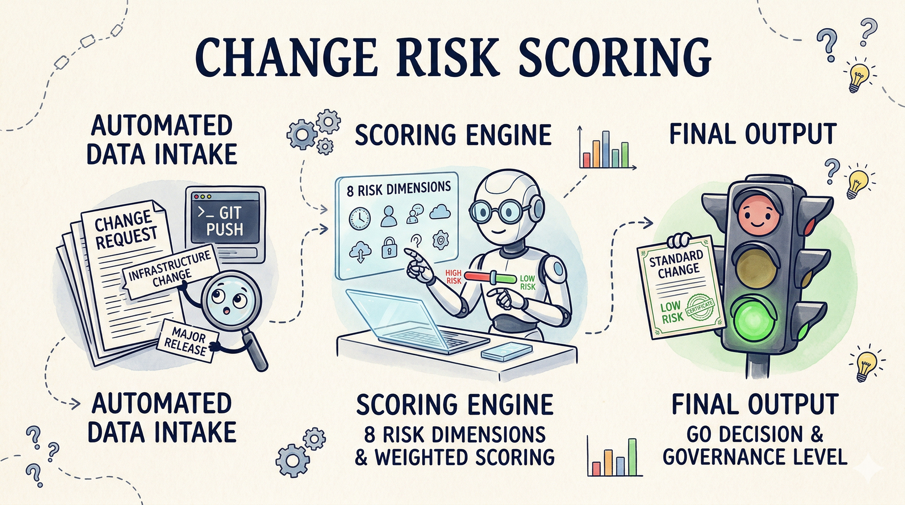
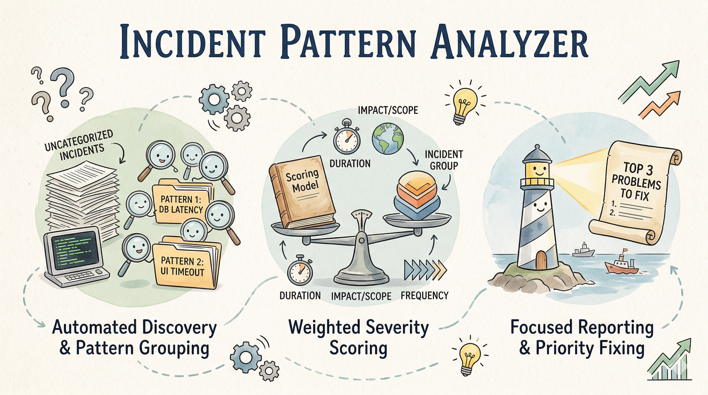

Projects · Three shipped
AI tools, built for the bank that can't send data to the cloud.

Change Risk Scoring Engine
Auditable change risk scoring on 8 weighted dimensions. Inherent vs. residual risk model from ISO 31000. CAB-ready narrative on a local LLM.
Read the case →
Incident Pattern Analyzer
Clusters incidents by root cause, surfaces recurring patterns, and points to the runbook that already addresses each cluster.
Read the case →
Program Status Report Generator
Turns Jira exports and project charters into a goal-aligned executive status report. Templated where it can be, AI-narrated where it should be.
Read the case →